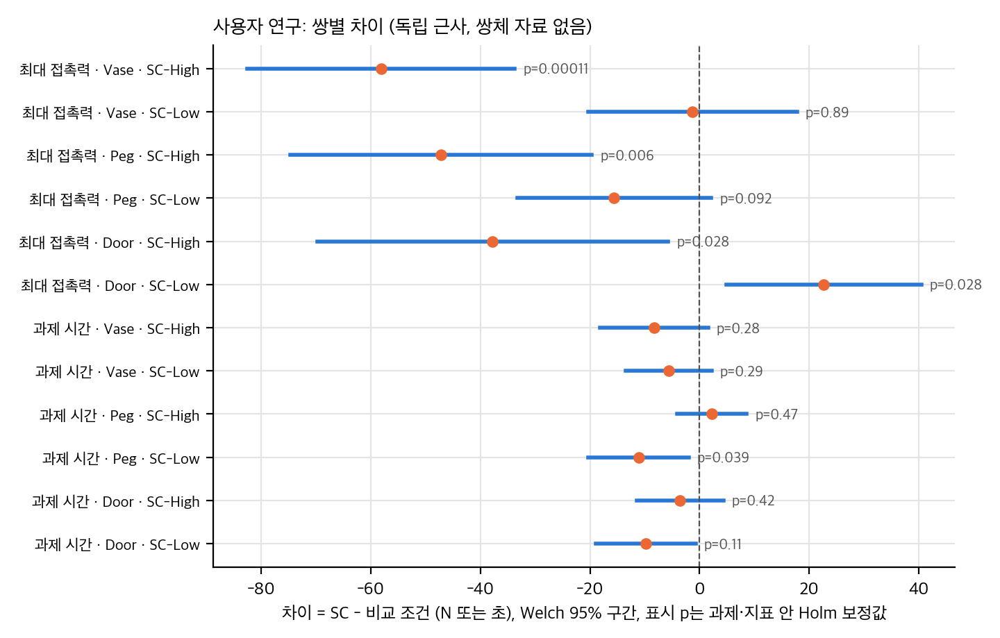
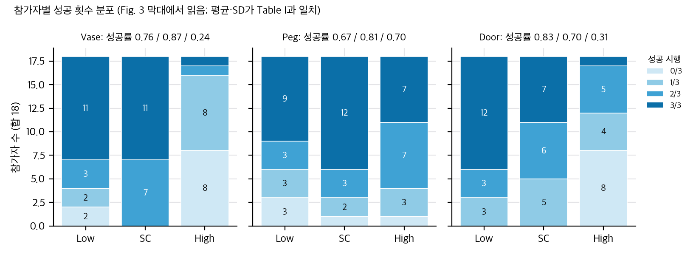
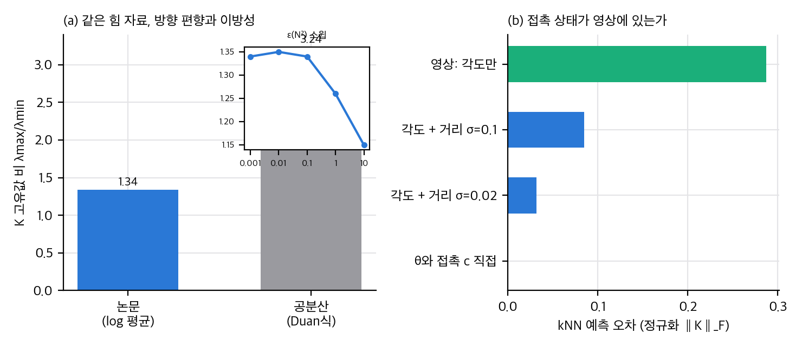
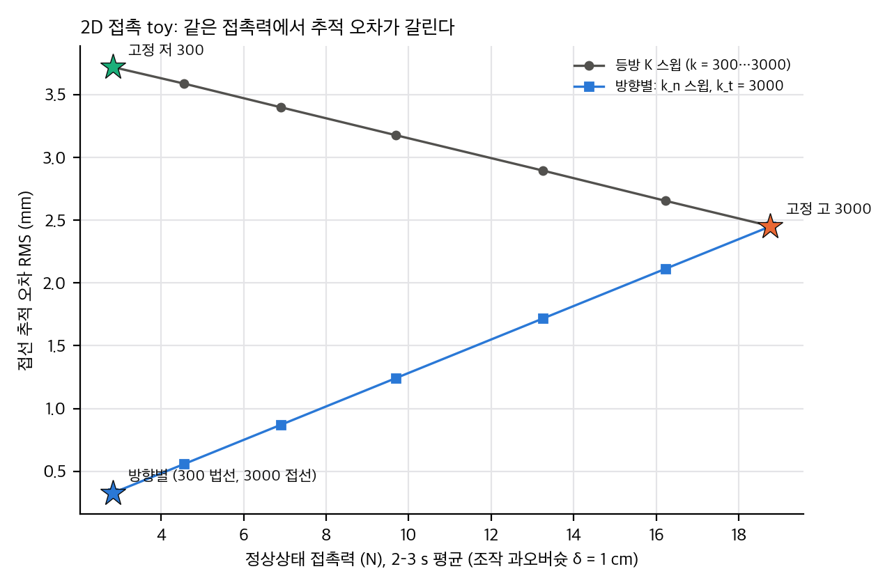

04 §4).03 §1.4, 04 C1).03 §1.5, 04 C8).03 §3, 04 C9).03 §4).03 §5, 04 C10).04 C15). 쌍체 검정 재현은 참가자 원자료가 없어 불가능하다(03 §1.6).02 아래 판본 메모 참고).report/의 개인용 리포트·PPT에만 씁니다(라이선스 판단은 04 §3).손목 카메라 영상만으로 "지금 어느 방향이 단단해야 하는가"를 3×3 대칭 양정치 강성 행렬로 예측하는 정책입니다. 학습 라벨은 시뮬레이션에서 접촉력 자료(특권 정보) 로 만든 환경 강성을 뒤집어 로봇 강성으로 바꿔 얻습니다. 사람은 자세만 명령하고, 정책이 임피던스를 실시간으로 조절하는 공유 제어(shared control)를 제안합니다. 사용자 연구(18명, 3과제, 조건당 9시행)에서 최대 접촉력은 고정 고강성보다 작고, 과제 시간은 고정 저강성보다 짧았습니다.
03 §1과 04 C1에서 다시 봅니다.상태 s를 평균 0, 분산 1로 정규화하고, 각 시점의 k개 최근접 이웃(유클리드 거리)을 고릅니다. k는 공간 차원보다 커야 행렬 전체를 추정할 수 있습니다(Sec. III-C 첫 문단).
이웃들의 접촉력 집합 F(s)를 방향으로 구 위의 m개 고정 섹터로 나눕니다. 비어 있지 않은 섹터마다 평균 방향 u_i와 크기의 95퍼센타일 p_i를 씁니다. 대표 힘 f̃_i = p_i u_i로 만들고, 행렬 f̃_i f̃_iᵀ + εI를 씁니다.
섹터 행렬을 행렬 로그 공간에서 평균합니다(Eq. 1). 그다음 지수로 되돌립니다(Eq. 2):
S_e = (1/m_valid) Σ_i log(f̃_i f̃_iᵀ + εI), K_e ∝ exp(S_e / 2)
논문은 공분산 방식 K_e² ∝ E[ff^T](Duan 식, [27])이 방향 편향과 팽창 효과(swelling)를 일으킨다고 지적하고, 로그-유클리드 평균 [28]을 택했습니다(Sec. III-C 중간).
이 식의 닫힌 해(유도, 03 §3): f̃_i f̃_iᵀ + εI는 u_i 방향 고유값 p_i² + ε, 나머지 두 방향 고유값 ε인 행렬입니다. 그래서 로그는 log ε·I + (log(p_i² + ε) − log ε) u_i u_iᵀ가 되고, 평균은
S_e = log ε·I + (1/m) Σ_i w_i u_i u_iᵀ, w_i = log(1 + p_i²/ε)
입니다. 즉 환경 강성의 방향은 "섹터별 로그 가중 힘 방향 산포 행렬"의 고유벡터이고, 고유값 비는 exp((s_1 − s_3)/2) 입니다. 논문은 ε 값을 밝히지 않습니다(04 §2).
04 §2).| 조건 | 병진 강성 | 병진 감쇠 | 회전 강성 | 회전 감쇠 |
|---|---|---|---|---|
| 고정 저강성 (기준선 1) | 300 N/m (전 축) | 20 N·s/m | 10 N·m/rad | 3.0 N·m·s/rad |
| 고정 고강성 (기준선 2) | 3000 N/m (전 축) | 70 N·s/m | 100 N·m/rad | 8.0 N·m·s/rad |
| Stiffness Copilot | 고유값 300–3000 N/m | d = 1.4√k (고유방향별) | 40 N·m/rad (중간) | 5.5 N·m·s/rad |
04 C15).통계: 연속 지표는 반복측정 일원 ANOVA 후 Holm 보정 쌍체 t 검정, 성공률은 Friedman 후 Holm 보정 Wilcoxon 부호순위 검정입니다.
| 지표 | 저강성 | Stiffness Copilot | 고강성 | 논문 본문 주장 |
|---|---|---|---|---|
| 최대 접촉력 Vase / Peg / Door (N) | 60.6 / 49.0 / 41.0 | 59.3 / 33.4 / 63.6 | 117.5 / 80.6 / 101.4 | SC < 고강성, 세 과제 모두(p<.05, d>.6) |
| 성공률 Vase / Peg / Door | 0.76 / 0.67 / 0.83 | 0.87 / 0.81 / 0.70 | 0.24 / 0.70 / 0.31 | SC > 고강성, Vase·Door p<.01 |
| 시간 Vase / Peg / Door (s) | 31.0 / 35.4 / 24.9 | 25.3 / 24.2 / 15.1 | 33.6 / 22.0 / 18.6 | SC < 저강성, Peg·Door p<.05, Vase p=.091 |
| 제어감 / 신뢰 / 예측가능 / 유창 (7점) | 4.6 / 4.0 / 4.5 / 4.2 | 5.7 / 5.0 / 5.5 / 5.3 | 4.3 / 4.0 / 4.2 / 3.6 | SC가 두 기준선보다 유의하게 높음 |
| NASA-TLX | 49.3 | 38.7 | 52.4 | SC가 낮음 |
03 §1.03 §1.4와 04 C1에서 다룹니다.04 C16). 통계에는 쓸 수 없습니다.논문이 스스로 밝힌 한계는 네 가지입니다. 병진 강성만 조절함(회전은 고정). 손목 영상만 씀(가려진 접촉 제약을 못 봄). 준정적 접촉만 다룸(망치질 같은 동적 접촉 제외). 일반화 미검증(처음 보는 물체·문). 여기에 이 분석이 덧붙이는 한계는 다음과 같습니다.
03 §1.4.03 §1.5).03 §3).04 §2)."촉각·힘 센서 없이 손목 영상만으로 방향별 임피던스를 예측하고, 사용자 연구에서 주관 지표를 크게 올린 공유 제어 아이디어"입니다. 다만 실험은 18명·3과제·조건당 9시행의 소규모이고, 안전 주장은 과제 세 개 중 두 개(Vase는 같은 수준, Peg는 더 낮음)에서만 성립하고, Door에서는 저강성보다 접촉력이 유의하게 큽니다. 라벨 생성 식은 명확하고 닫힌 해가 있어 검증이 쉽습니다. 반면 조건 간 교란과 배포 좌표 변환은 논문만으로 확인되지 않습니다.
| 항목 | v1 (2026-03-14) | v2 (2026-08-03) |
|---|---|---|
| 수치·표 | Table I 동일 | 동일 (성공 횟수, 평균, SD, F, χ², W 모두 같음) |
| 실험 설계 | 조건 파라미터 동일 | 동일 |
| 라벨 설명 | "physically optimal stiffness matrix" | "structured stiffness labels"로 완화 |
| 정규화 설명 | 새 로봇에 k_min, k_max만 맞추면 됨 | 해당 문장 삭제 |
| 통계 서술 | "Holm-corrected paired t-tests for post hoc" | "Holm-corrected paired t-tests" (post hoc 삭제) |
| 관련 연구 | 촉각 언급 2곳 | 촉각 언급 6곳, "tactile-reactive"·"contact-grounded policy" [41], [42] 추가 |
| 인용 번호 | DINOv3 [30], log-Euclidean [27] | DINOv3 [31], log-Euclidean [28] (번호만 바뀜) |
| 그림 3 캡션 | 상자·수염 설명 | 중앙값·1.5 IQR 설명으로 재작성 |
v1 → v2 텍스트 차이는 대부분 표현이며, 주장의 강도는 라벨 설명에서만 낮아졌습니다. 위 표 밖의 차이는 v1과 v2 본문의 문장 단위 대조로 확인했습니다.
이 문서의 재계산은 analysis/user_study_check.py(사용자 연구), analysis/contact_toy.py(접촉 toy), analysis/label_toy.py(라벨 추정과 식별)로 만들었고, 결과는 같은 이름의 *_results.json에 있습니다. 모두 numpy·scipy 1스레드, 수 초 안에 끝납니다.
입력의 한계: 원자료(참가자 × 시행 기록)는 공개되지 않았습니다. 프로젝트 페이지의 static/data/*.json은 조건·과제마다 시간열 하나입니다(예: high_vase_force.json은 0–27 s, 약 1만 9천 점, 참가자 키 없음). 대표 시행 한 번이라 통계에 쓸 수 없습니다. 따라서 재계산은 Table I의 평균·SD·검정 통계량과 Fig. 3의 성공률 막대에서 읽은 참가자별 성공 횟수에서만 합니다.
Fig. 3의 성공률 막대는 참가자 수를 성공 횟수(0/3–3/3)별로 쌓은 것입니다. 막대 합이 18인지, 평균(성공 수/54)이 Table I과 맞는지, SD가 맞는지로 판독을 검산했습니다.
| 과제 | 조건 | 0/3, 1/3, 2/3, 3/3 (참가자 수) | 성공 / 54 | 평균 (보고) | SD (보고) |
|---|---|---|---|---|---|
| Vase | Low | 2, 2, 3, 11 | 41 | 0.76 (0.76) | 0.36 (0.36) |
| Vase | SC | 0, 0, 7, 11 | 47 | 0.87 (0.87) | 0.17 (0.17) |
| Vase | High | 8, 8, 1, 1 | 13 | 0.24 (0.24) | 0.28 (0.28) |
| Peg | Low | 3, 3, 3, 9 | 36 | 0.67 (0.67) | 0.40 (0.40) |
| Peg | SC | 1, 2, 3, 12 | 44 | 0.81 (0.81) | 0.31 (0.31) |
| Peg | High | 1, 3, 7, 7 | 38 | 0.70 (0.70) | 0.30 (0.30) |
| Door | Low | 0, 3, 3, 12 | 45 | 0.83 (0.83) | 0.26 (0.26) |
| Door | SC | 0, 5, 6, 7 | 38 | 0.70 (0.70) | 0.28 (0.28) |
| Door | High | 8, 4, 5, 1 | 17 | 0.31 (0.31) | 0.33 (0.33) |
시간 분석의 n: Vase 9, Peg 14, Door 10(그림 3 "n=" 표기). 그런데 Door High의 0/3이 8명이라 Door의 시간 분석 n = 18 − 8 = 10과 맞습니다. Vase는 0/3이 High에 8명, Low에 2명이라 합집합 9명(겹침 1)과 맞습니다.
| 검정 | 재계산 | 보고 | 판정 |
|---|---|---|---|
| 반복측정 ANOVA ηp² (11개) | F·df로 계산 | 모두 일치 (0.291–0.502) | ✅ |
| ANOVA p 수준(별표) | F와 df로 계산 | 별 개수와 일치 (예 Peg 힘 p=0.0029 → **) | ✅ |
| 시간 ANOVA df | 2(n−1) | Vase df₂=16 → n=9, Peg 26 → n=14, Door 18 → n=10 | ✅ |
| Friedman 성공률 W = χ²/(n(k−1)) | χ² 20.13, 3.21, 19.77 | W 0.559, 0.089, 0.549 | ✅ |
| Friedman p | χ²₂ | Vase 4×10⁻⁵, Peg 0.20, Door 5×10⁻⁵ | ✅ (Peg p = 0.201 보고) |
Table I의 통계량은 서로 맞습니다. 그러나 그것이 본문 쌍별 검정이 맞다는 증거는 아닙니다(§1.6).
쌍체 자료가 없어서 참가자 단위 Mann–Whitney(독립 표본)로 근사했습니다. Holm은 과제 안에서 세 쌍에 적용했습니다.
| 과제 | 쌍 | p (MWU, 독립) | Holm | 그림 3 표기 |
|---|---|---|---|---|
| Vase | SC – High | 0.00000 (<10⁻⁴) | <0.001 | ** (r = .95) |
| Vase | Low – High | 0.0002 | 0.0005 | ** (r = .94) |
| Vase | SC – Low | 0.62 | 0.62 | 없음 |
| Peg | SC – High | 0.17 | 0.51 | 없음 |
| Peg | SC – Low | 0.25 | 0.51 | 없음 |
| Door | SC – High | 0.0015 | 0.0030 | ** (r = .82) |
| Door | Low – High | 0.0001 | 0.0002 | ** (r = .97) |
| Door | SC – Low | 0.13 | 0.13 | 없음 |

재계산: 쌍별 차이와 독립 Welch 95% 구간(쌍체 정보 없음). 표시 p는 과제·지표 안의 Holm 보정값.
본문 주장은 "SC는 고강성보다 힘이 작다(세 과제 모두, p<.05, d>.6)"와 "안전은 저강성과 비슷하다"입니다. 쌍체 자료가 없으므로 Welch 독립 근사와 평균 차이의 95% 구간으로 봅니다(Holm은 지표·과제 안에서).
| 과제 | SC − 고강성 (N) [95% 구간] | p (Holm) | SC − 저강성 (N) [95% 구간] | p (Holm) |
|---|---|---|---|---|
| Vase | −58.2 [−82.6, −33.7] | 0.0001 | −1.3 [−20.4, 17.8] | 0.89 |
| Peg | −47.2 [−74.7, −19.7] | 0.006 | −15.6 [−33.3, 2.2] | 0.09 |
| Door | −37.8 [−69.9, −5.7] | 0.028 | +22.7 [+4.9, +40.5] | 0.028 |
결론: 안전 주장은 "고강성보다 안전하다"는 확실하지만, "저강성과 비슷하다"는 Vase에서만 성립하고 Peg에서는 더 안전하며 Door에서는 저강성보다 위험합니다. 초록의 "safety comparable to a constant low stiffness"는 세 과제 중 한 과제에서 틀립니다.
| 과제 | SC − 고강성 (s) [95% 구간] | 백분율 (구간) | p (Holm) | SC − 저강성 (s) | p (Holm) |
|---|---|---|---|---|---|
| Vase (n=9) | −8.3 [−18.2, +1.6] | −25% (−54%…+5%) | 0.093 (0.28) | −5.7 | 0.15 (0.29) |
| Peg (n=14) | +2.3 [−4.1, +8.6] | +10% (−19%…+39%) | 0.47 | −11.1 | 0.020 (0.039) |
| Door (n=10) | −3.5 [−11.4, +4.3] | −19% (−61%…+23%) | 0.35 (0.42) | −9.8 | 0.037 (0.11) |
04 §2).
Fig. 3 막대에서 읽은 참가자별 성공 횟수. 합 18, 평균·SD가 Table I과 맞음을 검산했다.
Sec. III-C–D를 따라 가면 다음 값이 필요합니다. 논문에 없는 것은 표시했습니다.
| 단계 | 필요한 값 | 논문 | 영향 |
|---|---|---|---|
| 정규화 | 상태 s의 평균·분산(데이터셋) | 있음 | 이웃 거리에 영향 |
| 이웃 | k (> 과제 차원), 거리 | k 값 없음 | 시각 이웃이 다른 접촉 모드를 섞을 수 있음 |
| 섹터 | m, 분할 방식 | "예: 구면 격자" | 빈 섹터 수(m_valid)가 평균에 영향 |
| 대표 힘 | 95퍼센타일 | 있음 | 최대값 대비 이상치 민감도 |
| 정칙화 | ε (두 번: 섹터 행렬 εI, 역함수 h의 ε) | 값 없음 | §3 |
| 정규화 | κ_min, κ_max 백분위 | 값 없음 | 최종 이방성 범위를 결정 |
| 좌표 | 카메라 → 기저 회전 | 배포 때 설명 없음 | 04 §2 |

라벨 toy: (a) 방향 편향과 이방성 비율, ε 스윕. (b) 접촉 거리가 영상에 있을 때와 없을 때의 식별 오차.
섹터 i의 대표 힘을 f̃_i = p_i u_i(단위 방향 u_i, 크기 p_i)라 하면 A_i = f̃_i f̃_iᵀ + εI는 고유값 p_i² + ε(방향 u_i), ε(수직 두 방향)를 가집니다. 따라서
log A_i = log ε · I + (log(p_i² + ε) − log ε) u_i u_iᵀ = log ε · I + w_i u_i u_iᵀ, w_i = log(1 + p_i²/ε)
S_e = (1/m_valid) Σ_i log A_i = log ε · I + (1/m_valid) Σ_i w_i u_i u_iᵀ
K_e ∝ exp(S_e/2)이므로 K_e의 고유벡터는 가중 방향 산포 행렬 Σ_i w_i u_i u_iᵀ의 고유벡터이고, 고유값 비는 exp((s_1 − s_3)/2)입니다(s는 S_e의 고유값).
label_toy.py A, skew 0·1 모두).같은 힘 자료(4000개, 방향 균등 또는 접선 80%)에서 세 방식을 비교했습니다(법선 = z축, 고유값 비 λ_max/λ_min).
| 힘 자료 | 방식 | 최대 고유벡터와 법선 각 | 고유값 비 |
|---|---|---|---|
| 방향 균등 | 논문 (섹터 log 평균, ε = 0.1) | 0.8° | 1.34 |
| 방향 균등 | 공분산 (Duan식, K = √E[ffᵀ]) | 0.3° | 2.98 |
| 접선 80% | 논문 | 0.8° | 1.34 |
| 접선 80% | 공분산 | 1.2° | 3.24 |
| ε (N²) | 1e-3 | 1e-2 | 1e-1 | 1 | 10 |
|---|---|---|---|---|---|
| 고유값 비 (접선 80%) | 1.34 | 1.35 | 1.34 | 1.26 | 1.15 |
섹터별 K_i = A_i^{1/2}의 유클리드 평균과 로그 평균(= exp(mean log K_i))을 비교했습니다.

접촉 toy: 정상상태 힘 대 추적 오차. 방향별 강성은 같은 힘에서 추적이 낫다.
| 설정 | F_peak (N) | F_ss (N) | 해석식 F_ss | 접선 추적 RMS (mm) |
|---|---|---|---|---|
| 고정 저강성 (300/300) | 2.97 | 2.83 | 2.83 | 3.72 |
| 고정 고강성 (3000/3000) | 19.36 | 18.76 | 18.75 | 2.45 |
| 방향별 (법선 300, 접선 3000) | 2.96 | 2.83 | 2.83 | 0.33 |
| δ | 저강성 F_ss / 추적 | 고강성 F_ss / 추적 | 방향별 F_ss / 추적 |
|---|---|---|---|
| 0.5 cm | 1.4 N / 1.8 mm | 9.4 N / 1.2 mm | 1.4 N / 0.1 mm |
| 1.0 cm | 2.8 N / 3.7 mm | 18.8 N / 2.5 mm | 2.8 N / 0.3 mm |
| 2.0 cm | 5.7 N / 7.5 mm | 37.5 N / 5.0 mm | 5.7 N / 0.7 mm |
| k (N/m) | 300 | 500 | 800 | 1200 | 1800 | 2400 | 3000 |
|---|---|---|---|---|---|---|---|
| 등방: F_ss (N) | 2.83 | 4.55 | 6.90 | 9.68 | 13.25 | 16.23 | 18.78 |
| 등방: 추적 (mm) | 3.72 | 3.59 | 3.40 | 3.18 | 2.90 | 2.65 | 2.45 |
| 방향별 (k_t = 3000): 추적 (mm) | 0.33 | 0.56 | 0.87 | 1.24 | 1.72 | 2.11 | 2.45 |
contact_pareto.png.접선이 자유롭다고 하고(μ = 0) 정상상태를 풀면, 법선 유효 강성은 Schur 보수입니다.
K_eff = det K / K_xx, F = δ K_eff k_env / (K_eff + k_env), e_x = K_xy F / (K_xx K_eff)
K = R(e) diag(k_n, k_t) R(e)ᵀ이면 det K = k_n k_t(회전 불변), K_xx = k_n sin²e + k_t cos²e, K_xy = (k_t − k_n) sin e cos e입니다.
| 법선 추정 오차 e | K_eff (N/m) | F 해석식 = 시뮬레이션 (N) | e_x 해석식 / 시뮬레이션 (mm) |
|---|---|---|---|
| 0° | 300 | 2.83 = 2.83 | 0.00 / 0.05 |
| 10° | 308 | 2.90 = 2.90 | 1.49 / 1.44 |
| 20° | 335 | 3.14 = 3.14 | 3.03 / 2.98 |
| 30° | 387 | 3.59 = 3.59 | 4.67 / 4.61 |
| 45° (해석식만) | 545 | 4.91 | 7.4 |
| 60° (해석식만) | 923 | 7.79 | 10.1 |
| 90° (해석식만) | 3000 | 18.75 | 0 |
μ = 0 시뮬레이션은 해석식과 소수 둘째 자리까지 맞습니다. 마찰이 있으면(μ = 0.4) 추적 RMS는 0.33 → 1.82 → 3.42 → 5.19 mm로 커지고 F_ss는 2.7–3.0 N으로 거의 그대로입니다.
읽는 법:
| 입력 | 평균 오차 (정규화 ‖K‖_F) |
|---|---|
| 각도만 (거리 안 보임) | 0.287 |
| 각도 + 거리 (σ = 0.1) | 0.085 |
| 각도 + 거리 (σ = 0.02) | 0.032 |
| θ와 접촉 c를 직접 (오라클) | 0.0009 |
04 C10).01 §3.1), 축별 감쇠 규칙 d = 1.4√k의 질량 가정.stiffness-copilot/stiffness-copilot.github.io(최근 커밋 5035bd2, 2026-06-17).license: null). 그래서 클론하지 않았고(repo/ 없음), 논문 ↔ 코드 대조(D 항목) 대신 주장 검증(C 항목) 을 했습니다.analysis/user_study_check.py, 03 §1), (2) 라벨 식과 접촉 모델의 numpy toy(analysis/label_toy.py, analysis/contact_toy.py, 03 §3–5), (3) 웹 자료 목록 확인.| # | 주장 (출처) | 재계산·점검 | 판정 |
|---|---|---|---|
| C1 | "안전성은 저강성과 비슷하고, 효율은 고강성과 맞먹는다" (Abstract, Sec. IV-G) | 안전(최대 힘): Vase 같음(59.3 대 60.6), Peg 더 낮음(33.4 대 49.0), Door 더 높음(63.6 대 41.0, 독립 p = .014, Holm .028, 그림 3 Low–SC **, d = .84). 효율(시간 대 고강성): 검정 없음, 95% 구간 Peg −19%…+39% | ⚠️ 부분 성립. 안전 주장은 2/3 과제, 효율은 검정 안 됨 (03 §1.4–1.5) |
| C2 | SC 최대 힘이 고강성보다 작다, 세 과제 모두 (p<.05, d>.6) (Sec. IV-G) | 독립 Welch: Vase p = .0001, Peg .006, Door .028(Holm). 독립 pooled d = 1.62, 1.20, 0.81(그림 3의 쌍체 d는 1.13, .86, .61). 그림 3 표기 ***, **, * 와 일치 | ✅ |
| C3 | SC 성공률이 고강성보다 높다. Vase·Door는 p<.01, Peg는 무 (Sec. IV-G) | Friedman W 재현(0.559, 0.549, 0.089). 참가자 성공률 MWU: Vase .0002, Door .0015, Peg .17. 그림 3 r 표기(.94/.95, .82) 일치 | ✅ |
| C4 | SC 시간이 저강성보다 짧다. Peg·Door는 p<.05, d>.8; Vase는 p = .091, d = .72 (Sec. IV-G) | Peg 독립 p = .020(Holm .039), d = .95, 그림 3 "*, d = .88". Door 독립 p = .037(Holm .11), d = 1.03. Vase d = 0.72 일치, 독립 p = .15 | ⚠️ 방향과 d는 일치, 쌍체 p는 재현 불가. Door 유의성은 원자료 없이 확인 못 함 |
| C5 | SC가 주관 지표(제어감·신뢰·예측가능·유창·TLX)에서 두 기준선보다 유의하게 좋다 (p<.05, d>.6) (Sec. IV-G) | 그림 3에 SC와 두 기준선의 괄호가 모든 지표에 있음(Low–SC: ** .87, ** .89, *** 1.07, * .63, ** .77; SC–High: *** 1.20, ** .85, *** 1.10, ** 1.15, *** 1.38). 독립 | d |
| C6 | Table I 검정 통계량 (F, χ², W, p 별표) | ηp²·W·p를 df로 재계산, 모두 일치. 시간 df로 n = 9, 14, 10 역산 | ✅ 내부 일관 |
| C7 | 시간 분석 n (Vase 9, Peg 14, Door 10) (Sec. IV-E, Fig. 3) | Fig. 3 성공률 막대의 0/3 집계로 Door 10 = 18 − 8, Vase 9 = 합집합 검산 | ✅ |
| C8 | SC가 고강성과 "맞먹는 효율" (Sec. IV-G Summary) | 본문에 SC 대 고강성 시간 검정이 없음. 그림 3에도 괄호 없음. 독립 근사 p = .09, .47, .35 | ❓ 차이 미검출 ≠ 동등. 동등성 검정 없음 |
| C9 | 로그-유클리드 평균이 공분산·유클리드 평균보다 낫다(방향 편향과 팽창 방지) (Sec. III-C) | 닫힌 해 일치(오차 10⁻¹⁴). 팽창: 유클리드 평균 행렬식이 로그 평균의 약 10배. 방향 편향 toy에서는 두 방식 모두 법선을 찾음. 고유값 비는 공분산 대비 약 0.4배(1.34 대 3.24) | ✅ 수식과 팽창 / ❓ 방향 편향 주장은 이 toy에서 재현 안 됨 |
| C10 | 시뮬레이션 학습 정책이 실제 손목 영상에 zero-shot으로 옮겨진다 (Abstract, Sec. III-F, Sec. V) | 실제 영상에서 예측 정확도(라벨 대비 오차)를 보고하지 않음. 전이는 사용자 연구 결과로만 간접 확인. 시뮬레이션 대 실제 차이의 정량 지표 없음 | ❓ 미검증 (직접 증거 없음) |
| C11 | 정책은 "방향별로 무르다": 접촉 면에 수직으로 무르고 다른 방향은 단단하다 (Fig. 2 캡션) | 설계상 h(λ) 단조성으로 성립(03 §3.5). 학습된 예측은 정량 평가하지 않음 |
✅ 설계 / ❓ 학습 결과 |
| C12 | 접촉 법선을 알면 방향별 강성이 힘은 줄이고 추적은 유지한다 (toy 검증 대상) | 접촉 toy: 법선 정확 시 F_ss 2.83 N(= 저강성), 추적 0.33 mm(고강성보다 나음). 법선 오차 20°에서 추적 3.4 mm로 악화(03 §4) |
✅ 이 모델에서 성립. 법선 정확도가 핵심 가정 |
| C13 | 로봇 강성은 "환경 강성과 상보적으로" 정한다 (Sec. III-D) | 휴리스틱(h = 1/(λ+ε)), 최적성 근거 없음. v1의 "physically optimal" 표현은 v2에서 빠짐 | ⚠️ 설계 선택으로 기술해야 함 |
| C14 | 정책 90 Hz, 임피던스 명령 120 Hz 추적, 카메라 90 Hz, 힘 1 kHz (Sec. IV-C, III-G) | 수치는 본문 기록. 재현 가능성은 하드웨어에 달림 | ℹ️ 기록 |
| C15 | 세 조건의 차이는 강성뿐이다 (Sec. IV-A 설정) | 아님. 회전 강성: 저 10, 고 100, SC 40 N·m/rad. 감쇠 계수 d/√k: 저 1.15, 고 1.28, SC 1.4. SC만 시간에 따라 변하는 강성을 씀. 교란을 분리하는 실험 없음 | ⚠️ 설계 교란. 효율·안전 차이를 강성 탓으로만 돌릴 수 없음 |
| C16 | 프로젝트 페이지의 상호작용 시각화가 시연을 보여 준다 (웹) | 웹 데이터는 조건·과제당 시간열 1개(예 high_vase_force.json 0–27 s, 약 1만 9천 점). 참가자 키 없음 → 통계에 쓸 수 없음 | ℹ️ 정성 자료만 |
| C17 | 한 정책으로 세 과제를 수행한다 (Sec. III-F, Sec. V) | 본문 설명. 과제별 정책을 따로 학습했는지는 "pool all demonstrations and train one policy" | ✅ 기술 확인 |
| C18 | Peg-in-Hole에서 성공률 차이가 없는 이유는 시각 정렬 병목 (Sec. IV-G) | 가설. 정렬 실패 횟수 등 근거 자료 없음 | ❓ 가설 |
판정 요약: 확실한 것은 "고강성보다 힘이 작고 성공률이 높다(Vase, Door)"와 "주관 지표가 좋다"입니다. 가장 큰 문제는 안전과 효율 주장의 범위(C1, C8)와 조건 교란(C15)입니다. 실험 자체는 소규모(n=18, 과제별 9–14명 시간 분석)이고 원자료가 없어 쌍체 재현이 막혀 있습니다.
| 항목 | 영향 | 관련 |
|---|---|---|
| ε 값 (섹터 행렬 εI와 h의 ε 두 곳), 힘의 단위 | 이방성 크기 결정(ε가 p² 수준이면 크기 변화) | 03 §3.3 |
| 섹터 수 m, 분할 방식(격자 해상도), 빈 섹터 처리 | 평균의 방향 해상도, m_valid | 03 §2 |
| 이웃 수 k, 정규화 기준(데이터셋 통계) | 어떤 시연이 같은 라벨을 공유하는지 | 03 §2 |
| κ_min, κ_max 백분위, clamp 여부 | 최종 라벨 대비 범위 | 03 §3.5 |
| 카메라 → 기저 좌표 변환(정책 출력은 카메라 프레임, Sec. III-D) | 배포 때 방향이 틀리면 §3.5 e_x 오차가 생김 | 03 §4.5 |
| DINOv3 small 가중치 버전, MLP 학습률·epoch·배치·가중치 감쇠, 검증 손실 | 재학습 가능성 | 01 §2.5 |
| 증강 세기(잘라내기 비율, 지터 크기, 잡음 σ) | 시뮬레이션 대 실제 전이 | 01 §2.5 |
| 시뮬레이터 물리 설정: 마찰, 접촉 강성, 시간 간격 | 라벨의 정확도(라벨은 시뮬 힘에서 나옴) | 01 §2.2 |
| 시연 16회의 과제 상태 분포, 접촉 횟수 | 이웃 수 k의 적정성 | 03 §2 |
| 참가자별 시행 원자료(과제 × 조건 × 시행, 힘·시간) | 쌍체 검정·동등성 검정 재현 | 03 §1.6 |
| 시행 순서, 조건 순서 배정표 | 학습 효과 통제 여부 | 01 §3.3 |
| 안전 사건(보호정지) 정의, 비상정지 발생 기준 | 성공률의 실패 정의 | 01 §3.3 |
| 조건별 회전 강성과 감쇠를 맞춘 대조군 | C15 교란 분리 | 01 §3.1 |
| 실시간 추론 지연, 정책 호출 지연에 따른 임피던스 갱신 지연 | 안정성 평가 | 01 §2.6 |
nonexclusive-distrib/1.0(abs 페이지). CC BY가 아닙니다. 따라서 논문 그림과 원문 PDF는 개인용 리포트·PPT에만 쓰고, 게시본에는 넣지 않았습니다. 게시본 그림은 직접 만든 그래프 네 장뿐입니다.static/)은 재사용 권리가 확인되지 않아 분석에 쓰지 않았습니다. 웹 저장소 데이터는 통계 재계산 입력으로만 확인했습니다(03 첫 문단)..gitignore 제외와 재다운로드 줄은 필요 없습니다.판정 한 줄: 공식 재현은 불가능합니다. 이 맥에서는 라벨 수식과 접촉 모델은 검증할 수 있지만, 정책 학습과 실물 시험은 조건부이거나 불가능합니다. 아이디어를 옮기는 노력은 중간입니다.
불가능합니다. 방법 코드, 학습된 가중치, 시뮬레이션 데이터, 시뮬레이터(언리얼 엔진 기반 축소 모델 물리)가 모두 공개되지 않았습니다(2026-11-09 확인). 웹 저장소에는 뷰어와 Rerun 내보내기 스크립트만 있습니다. 하드웨어도 필요합니다. 논문 기준으로 Franka Research 3, OptiTrack 모션캡처(120 Hz), 발 페달, VR 디스플레이(사용자 연구의 시뮬 텔레옵용), RealSense D405, Bota SensONE F/T 센서가 쓰였습니다.
| 단계 | 판단 |
|---|---|
| 통계 재계산, 라벨 수식 검증, 접촉 toy, 식별 toy | ✅ 완료. numpy 1스레드, 각 수 초 |
| 라벨 생성기 구현(섹터 로그 평균, 백분위, 정규화) | ✅ 가능(numpy). 입력은 실제 시뮬 힘이 아니라 합성 힘으로만 검증 |
| 시뮬레이션 시연 생성 | ❌ 논문 시뮬레이터 없음. 공개 물리 엔진(MuJoCo 등)으로 대체하면 접촉 강성·마찰 설정이 달라짐. 설치 승인 필요 |
| 정책 학습(DINOv3-S 동결 + MLP 2×256) | ⚠️ 조건부. 백본은 작은 ViT(약 2천만 파라미터, 추정)라 MPS에서 특징 추출은 가능해 보임. torch 설치 승인, 손목 영상·라벨 쌍 데이터가 필요. 미확인 |
| 90 Hz 실시간 추론 | ❓ 미확인. 특징 추출을 MPS로 돌렸을 때 지연 측정 필요 |
| 실물 로봇 시험 | ❌ 하드웨어 없음 |
노력: 중간. 구성 요소별 추정입니다(실제 구현 시간은 측정 안 함).
analysis/label_toy.py의 paper_label과 sector_forces를 재사용.analysis/contact_toy.py의 K·D 계산을 재사용.하드웨어(재구현 평가 기준):
재구현의 위험:
03 §3.3). 두 값을 정하지 않으면 재현되지 않습니다.03 §4.5). 평가 지표에 추적 오차를 꼭 넣어야 합니다.03 §5).v1 → v2의 수치·표는 같고, 라벨 설명의 강도만 낮아졌습니다(01 판본 메모). 이 차이가 C13(휴리스틱 표현)에 해당합니다.
논문 Sec. II가 세 갈래로 정리한 흐름을 따랐습니다.
논문의 위치는 "사람이 자세를 명령하고, 임피던스만 학습 정책이 맡는다"입니다. 시뮬레이션의 특권 접촉 정보로 방향별 강성 라벨을 만들고, 이를 손목 영상 정책으로 증류한다는 점이 새롭습니다(Sec. II-A 마지막 문단).
| 연구 | 같은 점 | 다른 점 (논문 기준) |
|---|---|---|
| Kamijo 등 [3] (IROS 2024) | 햅틱 텔레오퍼레이션으로 가변 컴플라이언스 학습 | 강성을 버튼 템플릿으로 제한. SC는 연속 full-matrix 방향 강성 |
| Hernandez 등 [12] (ICRA 2025) | 공동조종(co-pilot)이 강성 수준을 고른다 | 이산 강성 단계. SC는 방향과 크기를 연속 예측 |
| Michel 등 [18] (RA-L 2023) | 공유제어에서 힘 기반 강성 추정 | 연속 접촉 과제(절단) 가정. SC는 간헐 접촉과 여러 전략에 쓰려고 함(논문 Sec. II-B 마지막) |
| Adaptive Compliance Policy [2] | 학습된 강성 출력 | 자율 실행. 사람 명령을 섞지 않음 |
| 저장소 내 분석 | 관련성 | 확인한 점 |
|---|---|---|
dexforce/ (DexForce, arXiv:2501.10356) |
힘 측정으로 위치 목표를 밀어 넣는 force-informed 목표 x_f = x_o + k_f f (식 3). SC와 같이 "접촉력을 임피던스 신호로" 쓴다 | DexForce의 k_f는 손으로 맞춘 스칼라. SC는 방향별 행렬을 학습. 둘 다 힘과 강성을 한 값으로 묶는 근사이므로 dexforce/analysis/03 식 유도와 비교 가능 |
beyond_implicit_force/ (arXiv:2607.14578) |
원격조작 서보 게인이 힘 단서가 된다. P 서보에서 정상상태 힘 ≈ K·δ | SC의 접촉 toy도 같은 항등식을 씀(정상상태 F = k_env K δ/(K + k_env), 03 §4). BIF 03 §1.1과 같은 물리 |
restacvla/ (ResTacVLA, arXiv:2607.03387) |
손목 영상에서 접촉 관련 양을 예측해 정책에 넣는다 | ResTacVLA는 촉각 잠재와 σ 게이트, SC는 강성 행렬. 둘 다 "영상만으로 접촉 국면을 얼마나 아는가"가 쟁점 (restacvla/analysis/03 §2, SC 03 §5) |
reactive_grasp/ (arXiv:2609.30082) |
링크별 접점 기하와 접촉력 QP | SC는 접촉 방향을 시뮬레이션에서 얻고, reactive_grasp는 메쉬 기하에서 계산. 두 방법 모두 "접촉 법선의 방향"이 핵심 |
nestdex/ (NestDex, arXiv:2608.13362) |
원격조작 사용자 연구 통계(Table II·III, Fisher·Holm·MH) | 시간 정규화와 소표본 검정 설계 비교 (nestdex/analysis/03 §1, §6). SC의 Friedman·Holm 절차는 같은 계열 |
| Contact-grounded policy [42] | 같은 그룹의 촉각 정책. 논문 v2가 한계에서 인용 | 논문 Sec. V가 향후 과제로 인용 |
03 §4.03 §1.6).03 §5).| 저장소 | 무엇 | 공식? | 라이선스 | 스타 | 최근 커밋 | 비고 |
|---|---|---|---|---|---|---|
| stiffness-copilot/stiffness-copilot.github.io | 프로젝트 페이지(viewer JS, 내보내기 Python 스크립트, 조건·과제별 힘·세계 기록 JSON 18개, 영상·그림) | 공식 (계정 stiffness-copilot, 공개 저장소 1개, 2026-03 생성) |
없음 (license: null) |
2 | 5035bd2 (2026-06-17) "add conference" |
정책·라벨·학습 코드 없음. 라이선스가 없어 코드·데이터 재사용 권리가 불명확 |
| uwgraphics/relaxed_ik_core | RelaxedIK 자세 명령 생성 ([32]) | 구성 요소(저자 인용) | MIT | 159 | 1c48d2a (2024-08-21) |
원격조작 명령 변환에 씀 |
| UT-Austin-RPL/deoxys_control | Franka 연산 공간 임피던스 제어기 | 구성 요소(논문은 [34]로 인용, [34]은 Viola 논문) | Apache-2.0 | 313 | 97396fd (2024-05-23) |
인용 대상이 어긋남. 제어기 출처는 확인 필요 |
| facebookresearch/dinov3 | DINOv3 백본(small, 동결) ([31]) | 구성 요소 | GitHub가 SPDX를 인식 못 함(NOASSERTION). 저장소 자체 라이선스 확인 필요 | 11714 | 6876159 (2026-07-15) |
가중치 라이선스도 별도 확인 |
검색 결과:
gh search repos "stiffness copilot": 위 프로젝트 페이지 저장소만 나옴.결론: 공식 코드는 없습니다. 클론할 공식 구현이 없으므로 repo/는 만들지 않았고, 코드 대조 대신 04_claim_verification.md로 검증했습니다.
inproceedings이고 학회명은 IROS 2026입니다.